Next: Optimizing over the circle: Up: Instability and the geometry Previous: Dealing with epsilon-optimal solutions
We now consider another extreme situation that can lead to unexpected
results.
Consider the problem defined as
It is clear from the graphical representation that the optimal
solution for the problem will be at the intersection of constraints
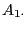 with 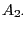; and if we do the algebra, we will get
that
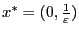. Also note that as you decrease
 the feasible region stretches upwards, leaving its base
unchanged. We will consider the case where
the feasible region stretches upwards, leaving its base
unchanged. We will consider the case where  is a very
small, positive number (between and
is a very
small, positive number (between and  ).
).
If we perturb the right-hand side vector  from 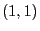 to
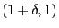, the new solution will be
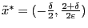. To
assess the impact of this perturbation, we compute the 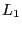 distance
between this modified solution and the previous solution, which is
given by
from 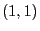 to
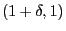, the new solution will be
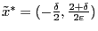. To
assess the impact of this perturbation, we compute the 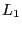 distance
between this modified solution and the previous solution, which is
given by
A similar issue arises if we perturb to 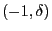;
the new optimal solution becomes
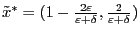.
But now, if
 , then the new solution for
, then the new solution for  will
change from
to
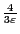 (a
33% relative difference). Again, small changes in the input can
produce big changes in the optimal solution.
will
change from
to
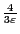 (a
33% relative difference). Again, small changes in the input can
produce big changes in the optimal solution.
What is driving this bad behavior? The problem is that the optimal
point is defined by two constraints that are nearly parallel. The
smaller  is, the closer to parallel the are. When the
constraints are so close parallel, small changes in the slopes can
lead to big movements in the point where they intersect.
Mathematically speaking:
is, the closer to parallel the are. When the
constraints are so close parallel, small changes in the slopes can
lead to big movements in the point where they intersect.
Mathematically speaking: